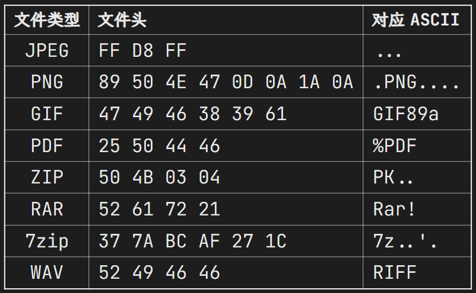
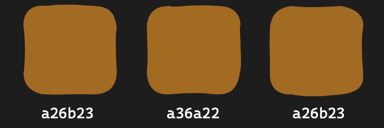
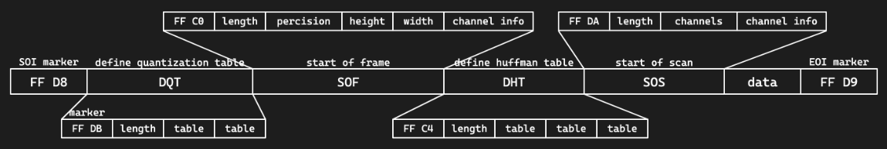
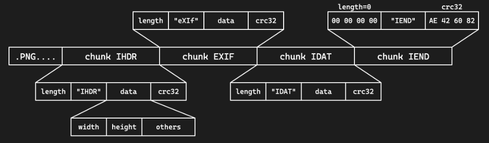
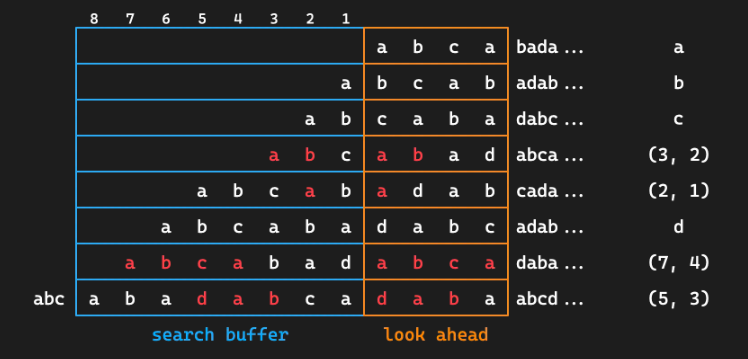
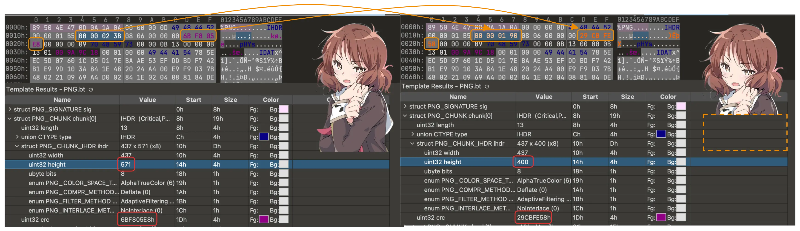
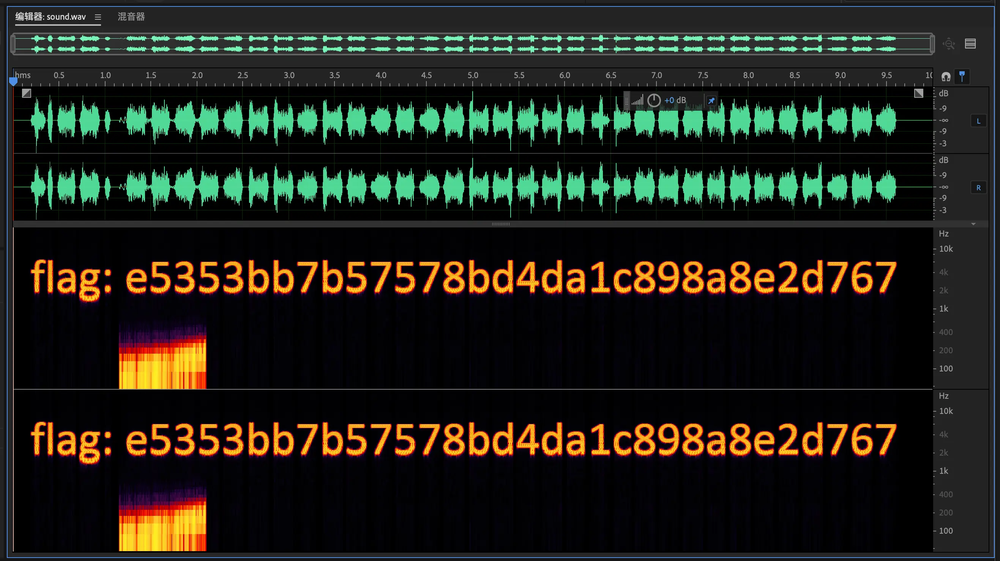
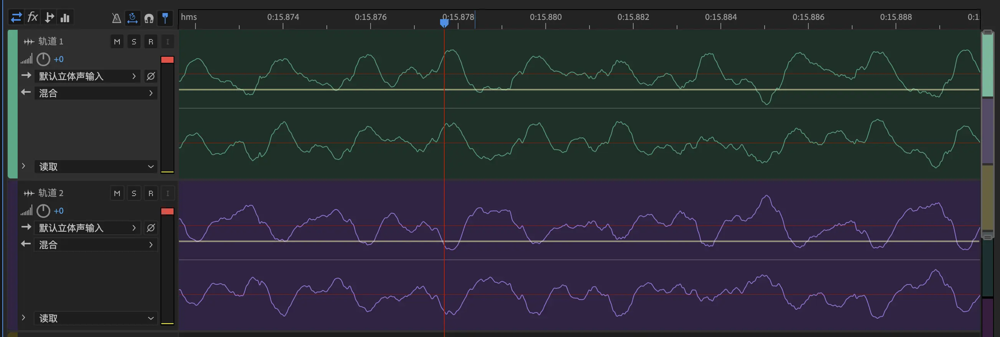

Misc Lec 2: 文件 / 图像隐写⚓︎
参考
箱子学长的在线课件（基本都是照搬的（doge））
文件系统基础⚓︎
-
文件存储
- 不同文件系统及其组织方式：
- MS 派：FAT、NTFS、exFAT、ReFS
- Apple 派：HFS、APFS
- Linux 派：ext[234]、XFS、Btrfs、ZFS...
- 文件是一串二进制数据
- 在 HDD 上是微小磁极的磁化方向
- 在 SSD 上是电荷的存储状态
- “文件名”是由文件系统管理的，不是文件本身数据的一部分
- 文件系统会记录文件名、文件大小、创建时间、修改时间等信息
- 文件内容才是真正的数据
- 不同文件系统及其组织方式：
-
文件类型的判断依据
- 扩展名
- .jpg .webp .txt .docx ...
- 是文件名的一部分，可以随意修改 +（在一些桌面环境下）决定了打开文件的默认程序
- 内容
- 通过文件内容来识别文件类型（√）
file命令：根据文件内容判断文件类型- 不同文件类型有不同的“魔数”（magic number）
- 扩展名
-
二进制查看文件与分析的工具
- 010 Editor：全平台最常用的二进制编辑器，但要付费（但有很多破解版）
- wader/fq
- Hex Fiend：Mac OS 上的免费开源高效的二进制编辑器
- ImHex
-
文件类型检测与元信息
-
常见文件的 magic number：
 -
通过
file命令进行文件类型的检测 - 可以使用
exiftool读取部分文件的元信息
-
-
文件附加内容的识别与分离
- 大部分文件类型都有一个标记文件内容结束的标志，比如 PNG 的 IEND 块、JPEG 的 EOI 标志（FF D9）
- 所以一般在文件末尾添加其他字节时，不会影响原文件本身的用途
- 因此有些隐写是将数据隐藏在文件末尾达到的
- 或者在文件后叠加另一份文件
cat cover.jpg secret.zip > cover_stego.jpg
- 附加内容的识别
exiftool一般可以识别图像文件后的附加数据binwalk可以检测叠加的文件
- 附加文件的分离
binwalk或foremost识别并分离dd if=<src> of=<dst> bs=1 skip=<offset>手动分离
图像隐写基础技术⚓︎
-
文件内容基本隐写
- 文件末尾添加数据
exiftool识别短数据，或者十六进制编辑器直接观察binwalk识别叠加文件，foremost提取- 图像末尾叠加一个压缩包，就是所谓的“图种”
- 修改后缀名可能可以解压（部分解压软件会忽略前面的图像）
- 其实不如直接分离
- 直接利用元信息，
exiftool即可读取
- 文件末尾添加数据
-
色彩空间（sRGB、Adobe RGB、Display P3 等）是一个相对非常复杂的概念，而且是针对显示的，因此没有展开介绍
-
色彩模式（color mode
） ：表示颜色的数据- 二值图像（bitonal
） ：每个像素只有两种颜色，如黑白 - 灰度图像（grayscale
） ：每个像素有多种灰度，如 256 级灰度 - RGB(A)：3(+1) 通道，表示 RGB 三种颜色，A 表示透明度通道
- CMYK：青 cyan、品红 magenta、黄 yellow、黑 black 四种颜色混合
- HSV：色调 hue、饱和度 saturation、明度 value
- HSL：色调 hue、饱和度 saturation、亮度 lightness
- YCbCr：亮度 luminance、蓝色色度 blue chroma、红色色度 red chroma
- LAB：亮度 lightness、绿红色度 A、蓝黄色度 B
- 二值图像（bitonal
-
LSB 隐写 > LSB：Least Significant Bit，最小位（我记得fds讲基数排序的时候提到过）
- 人眼对于微小的颜色变化不敏感
- 对于 8 bit 的颜色值，最低位的变化不会被察觉
- 可以随意修改最低位，而不影响图像的显示效果
- LSB 隐写将颜色通道的最低位用来编码信息
- 图像：stegsolve / CyberChef View Bit Plane
- 数据：stegsolve / CyberChef Extract LSB / zsteg / PIL
- 人眼对于微小的颜色变化不敏感
-
PIL 图像处理基础 PIL（Python Imaging Library）是 Python 中非常常用的图像处理库
- 官方文档 / 教程
- 除此之外想要灵活使用可能还需要一点 numpy 的基础
- 基本用法
from PIL import Image导入和图像读写处理有关的 Image 类img = Image.open(file_name)打开图像img.show()显示图像；img.save(file_name) 保存图像img.size图像大小，img.mode 图像模式img.convert(mode)转换图像模式img.getpixel((x, y))获取像素点颜色img.putpixel((x, y), color)设置像素点颜色np.array(img)将图像转换为 numpy 数组
- 具体图像模式以及转换
- '1'：黑白二值（0/255
） ；'L'：灰度（8 bit） ，'l'：32 bit 灰度 - L = 0.299 R + 0.587 G + 0.114 B
- 'P'：8bit 调色盘，获取的像素值是调色盘索引
- 'RGB'、'RGBA'
- 'CMYK'：转换时有色差，CMY = 255 - RGB，K = 0
- 'YCbCr'、'LAB'、'HSV' 等，转换时有复杂公式（可能出现新的隐写）
- '1'：黑白二值（0/255
- PIL 其他模块用途
- ImageDraw 用于绘制图像、绘制图形
- ImageChops 用于图像通道的逻辑运算
- ImageOps 用于图像整体的运算一类
- ImageFilter 用于图像的滤波处理
图像格式介绍⚓︎
-
图像文件的存储内容
- 图像信息：宽高、色彩模式、色彩空间等
- EXIF 信息：拍摄设备、拍摄时间、GPS 信息等
- 像素数据：每个像素的颜色信息；二值、灰度、RGB、CMYK、调色盘等
- 对于标准 RGB 图像，每个像素需要 24 bits
- 对于一张 1080p 图像，需要 6.22 MB，4K 则需要 24.88 MB
- BMP 格式
- 图像格式的压缩算法
- PNG 无损，JPEG 有损
- GIF 有损且只支持 256 色
- 新兴格式如 HEIF、WebP、AVIF 等
- 图像信息：宽高、色彩模式、色彩空间等
-
JPEG
-
文件格式：JPEG 使用分段的结构来进行存储，各段以 0xFF 开头，后接一个字节表示类型
- FFD8（SOI
） ：文件开始 - FFE0（APP0
） ：应用程序数据段，包含文件格式信息（上图没有） - FFE1（APP1
） ：应用程序数据段，包含 EXIF 信息（上图没有） - FFDB（DQT
） ：量化表数据 - FFC0（SOF
） ：帧数据，包含图像宽高、色彩模式等信息 - FFC4（DHT
） ：huffman 表数据 - FFDA（SOS
） ：扫描数据，包含数据的扫描方式，huffman 表的使用方式等 - FFD9（EOI
） ：文件结束- 压缩原理：DCT（离散余弦变换）+ Huffman 编码
- 由 RGB 转换到 YCbCr，然后减少 Cb、Cr 的采样率
- 将图像分块，每个块 8x8，进行 DCT 变换
- 将图像转换为频域，便于压缩高频部分
- 量化，将 DCT 变换后的系数除以量化表中的系数
- 再次减少高频部分的数据
- 根据不同的量化表，可以调整压缩质量
- 通过游程编码和 huffman 编码进行压缩
- FFD8（SOI
-
-
PNG
-
文件格式
- 文件头 89 50 4E 47 0D 0A 1A 0A | .PNG....
- 采用分块的方式存储数据
- 每块的结构都是 4 字节长度 + 4 字节类型 + 数据 + 4 字节 CRC 校验
- 四个标准数据块：
- IHDR：包含图像基本信息，必须位于开头
- 4 字节宽度 + 4 字节高度
- 1 字节位深度：1、2、4、8、16
- 1 字节颜色类型：0 灰度，2 RGB，3 索引，4 灰度透明，6 RGB 透明
- 1 字节压缩方式，1 字节滤波方式，均固定为 0
- 1 字节扫描方式：0 非隔行扫描，1 Adam7 隔行扫描
- IHDR：包含图像基本信息，必须位于开头
- PLTE：调色板，只对索引颜色类型有用
- IDAT：图像数据，可以有多个，每个数据块最大 2 31 -1 字节
- IEND：文件结束标志，必须位于最后，内容固定 + PNG 标准不允许 IEND 之后有数据块，因此位于 IEND 块之后的数据不会被显示，可以通过前面提到的工具直接观察得到
- 其他辅助数据块：eXIf、tEXt、zTXt、tIME、gAMA……
- eXIf 元信息，tIME 修改时间，tEXt 文本，zTXt 压缩文本
- 压缩原理
-
PNG 使用 Deflate 压缩算法
- 是 LZ77 结合 huffman 编码的一种压缩算法
- LZ77：利用滑动窗口，找到最长的重复字符串，用指针和长度表示

-
会进行滤波，减少数据的冗余性，提高压缩率
- 五种滤波器：None、Sub、Up、Average、Paeth
-
参考阅读
- 去年的 misc 专题一讲义
- JPEG
- The Unreasonable Effectiveness of JPEG: A Signal Processing Approach
- Reducible 频道的视频，B 站搬运：BV1iv4y1N7sq
- ISO/IEC 10918-1:1994 official standard
- JPEG 压缩原理与 DCT 离散余弦变换
- Understanding and Decoding a JPEG Image using Python
- libjpeg 源码 GitHub:thorfdbg/libjpeg
- The Unreasonable Effectiveness of JPEG: A Signal Processing Approach
- PNG
- How PNG Works: Compromising Speed for Quality
- Reducible 频道的视频，B 站搬运：BV1wY4y1P7o7
- PNG Specification (Third Edition)
- How PNG Works: Compromising Speed for Quality
隐写进阶技术⚓︎
关于图像⚓︎
- 图像大小修改
- PNG 图像按行进行像素数据的压缩，以及存储 / 读取
- 当解码时已经达到了 IHDR 中规定的大小就会结束
- 因此题目可能会故意修改 IHDR 中的高度数据，使之显示不全
- 恢复的话更改高度即可，同时注意 crc 校验码，否则可能报错
- binascii.crc32(data)，data 为从 IHDR 开始的数据

-
需要原图的图像隐写
- 有些情况下的图像隐写需要原图才能解密，这时第一步一般是 OSINT 搜索原图
- 使用识图工具进行搜索
- 一般需要搜原图的题题目描述会带有来源暗示之类的
- 多注意搜到的图像大小、质量，确保是真正的原图
- 接下来利用原图和隐写图像的差异进行分析
- 图像像素异或观察差异
- PIL 手动处理 / ImageChops.difference
- stegsolve image combiner
- 图像像素异或观察差异
- 盲水印系列
- 给了打水印的代码的话直接尝试根据代码逆推即可
- 没有给代码的可能就是常见的现有盲水印工具
- 有些情况下的图像隐写需要原图才能解密，这时第一步一般是 OSINT 搜索原图
-
更多图像文件内容隐写手段
- 人为隐写
- JPEG 中 DCT 系数可以进行 LSB 隐写
- JPEG 中 DHT 定义的 huffman 表可能有冗余项，可以隐写
- PNG 中附加多余 IDAT 数据块的隐写（显示时被忽略）
- PNG 中使用调色盘时可以进行调色盘隐写（EZStego 隐写）
- 较成熟的工具隐写
- steghide、stegoveritas、SilentEye 等
- 一般找到了类似密码一类的大概率是工具题
- 人为隐写
关于音频⚓︎
这列题目不常出
-
音频文件格式简介
- mp3：有损压缩
- 具体格式不多介绍，遇到了基本上也就是声音本身的隐写
- wav（waveform
） ：无损无压缩- 直接存储的是音频的波形数据，可操作性更高
- 文件结构也是分 chunk 的，有 RIFF、fmt、data 等
- 编码音频数据的 sample 也可以进行 LSB 隐写
- flac：无损压缩，如果出现可能考虑转换为 wav
- 使用 Python 的 soundfile / librosa 库进行音频处理
- mp3：有损压缩
-
频谱隐写
- 接下来的一些隐写方式都不依赖于无损格式，只要能听就能尝试
- 一般使用 Adobe Audition （也可以使用 Audacity，我感觉更加轻量）打开来进行进一步的分析
- 频谱隐写是观察音频的频谱图，可能会有部分信息经过了调整
- 比如如下攻防世界的一道题目 Hear with your eyes
- 频谱隐写是观察音频的频谱图，可能会有部分信息经过了调整

- 音频叠加
- 如果可以找到原音频，或提供了原音频，可以进行比较
- 方法是在 Audition 中创建多轨会话
- 将两个音频拖入两个轨道
- 效果 > 匹配响度，将两条音轨的响度匹配
- 点进其中一条音轨，效果 > 反相，将波形上下颠倒
- 两条音轨匹配上波形之后播放 / 混音，就能听到差异了

一些其他 misc 类型题目⚓︎
-
ZIP 伪加密
- ZIP 也使用分段的方式存储数据
- 本地文件记录 50 4B 03 04，可以有多个
- 中央目录记录 50 4B 01 02，可以有多个
- 中央目录结束 50 4B 05 06
- 在中央目录记录中有一个字段记录加密方式
- 如果不为 0 表示有加密
- 其他字段，如最小版本
- 可能修改为一个不合法的值，无法用解压软件解压
- ZIP 也使用分段的方式存储数据
-
沙箱逃逸
- 沙箱：做了某些限制的隔离环境
- 例如 Docker，或一个沙箱程序，如 rbash
- Python 解释器也可以作为一个沙箱
- 通过限制模块、限制函数、代码审计等方式
- 沙箱逃逸就是在沙箱中执行代码，获取到沙箱外的权限
- Python 的 os 及 importlib 模块是常见的逃逸点
- 沙箱：做了某些限制的隔离环境
-
PPC（编程题，不常见）
- 一般是限制代码长度 / 汇编指令，要求实现某个功能
- 如 ZJUCTF 2022: Self SHA
评论区
如果大家有什么问题或想法，欢迎在下方留言~